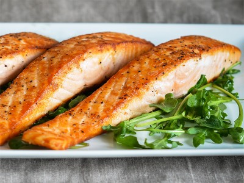

|  |
▸ Ingredients:
▸ Time to prepare: 30 minutes ▸ Approx quantity: 1 medium plate |
▸ Detailed recipe:
- Clean salmon, then use paper towels to dry off all the water.
- Add 1/2 teaspoon salt, 1/2 teaspoon pepper to the salmon, marinate evenly over the fish meat (do not marinate in the fish skin).
Then leave for 10 minutes in the refrigerator to infuse the flavors.
- Put the pan on the stove, add 2 tablespoons of cooking oil, heat it up, then add the salmon. Place the salmon skin on the pan first.
Sauté each side for 2-3 minutes on medium heat. When the pan is done, remove the salmon from the pan.
- Finish pan-fried Salmon, then remove to a plate. Add a few stalks of asparagus if you like (if you don't like vegetables, don't add them).
Leave the salmon for 5 minutes to firm up the fish meat and enjoy. Eating pan-fried salmon with chili sauce mixed with mayonnaise is the best.
▸ Calories and related information: